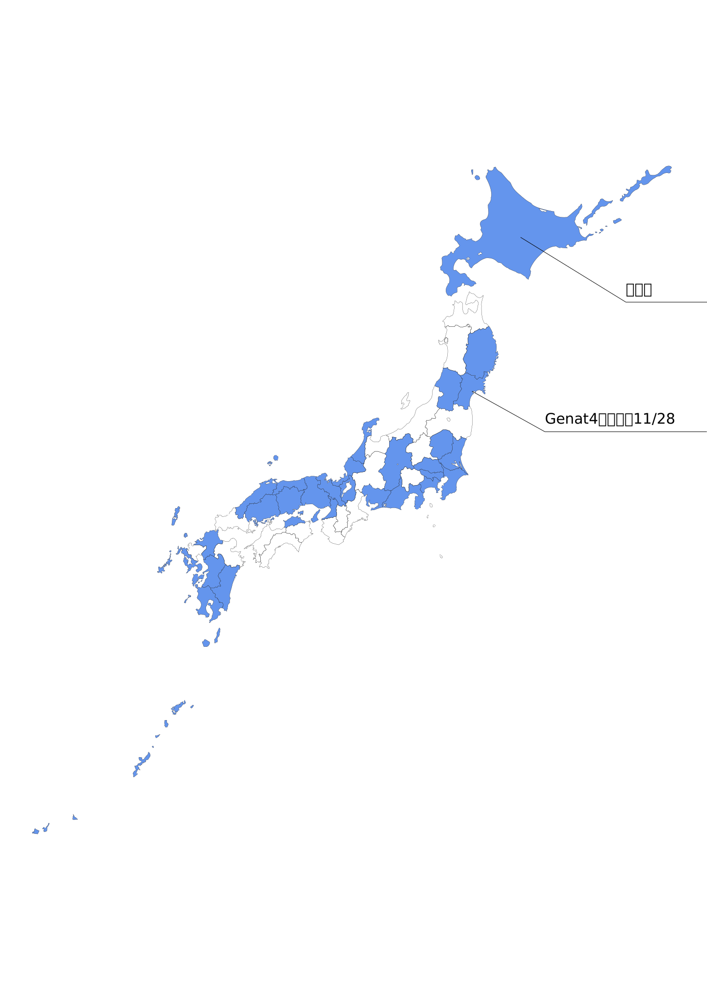

TownWorkの旅
日本全国行脚の旅Town Work の旅とは
日本全国に散らばる週間バイト情報雑誌を集めようという生命を掛けた旅
トップ画について（TownWorkの旅）
まだアナログ時代だった頃、必死の思い出作成したダンボール板。タウンワークが増えるたびに蛍光ペンで色を塗り、日本全土を侵略しようとする野望があった。 あまりにも時間がかかっているため、最初の方に手に入れた県は色あせてしまっている。

| 場所 | 雑誌名 | コメント | |
|---|---|---|---|
| 沖縄 | ルーキー | Download | |
| 長崎 | タウンワーク | Download | |
| 福岡 | タウンワーク | Download | |
| 熊本 | タウンワーク | Download | |
| 鹿児島 | タウンワーク | Download | |
| 宮崎 | タウンワーク | Download | |
| 香川 | タウンワーク | Download | |
| 広島 | タウンワーク | Download | |
| 岡山 | タウンワーク | Download | |
| 鳥取 | メリット | Download | |
| 島根 | メリット | Download | |
| 兵庫 | タウンワーク | Download | |
| 京都 | タウンワーク | Download | |
| 大阪 | タウンワーク | Download | |
| 滋賀 | タウンワーク | Download | |
| 福井 | タウンワーク | Download | |
| 石川 | タウンワーク | Download | |
| 岐阜 | タウンワーク | Download | |
| 愛知 | タウンワーク社員 | Download | |
| 長野 | 求人ジャーナル | Download | |
| 静岡 | タウンワーク | Download | |
| 神奈川 | タウンワーク | Download | |
| 東京 | タウンワーク | Download | |
| 埼玉 | タウンワーク社員 | Download | |
| 栃木 | タウンワーク | Download | |
| 千葉 | タウンワーク | Download | |
| 茨城 | タウンワーク | Download | |
| 宮城 | タウンワーク | Download | |
| 山形 | タウンワーク | Download | |
| 岩手 | 求人ジャーナル | Download | |
| 北海道 | タウンワーク | Download |